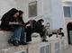

پذيرش > تریبون > گزارش كمپين > هفته اول تیر ماه با زنان در خبر - تجاوز گروهی, تفکیک جنسیتی, بازداشت


 هفته اول تیر ماه با زنان در خبر - تجاوز گروهی, تفکیک جنسیتی, بازداشت هفته اول تیر ماه با زنان در خبر - تجاوز گروهی, تفکیک جنسیتی, بازداشت
13 تیر 1390 - - نسخه قابل چاپ
تغییر برای برابری: تابستان داغ 1390 شروع شد؛ در حالیکه هنوز داغی داغ تجاوزهای گروهی و اظهارنظرهای گروهی از مسئولان نه تنها سرد نشده بود که بر آتش آن دمیده می شد.اگر بهار برای زنان تحفه ای به جز زندان و مرگ نداشت، تابستان هم ظاهرن دست خالی از خبرهای خوب از راه رسیده است.
انتشار اخبار در مورد حداقل سه تجاوز گروهی نه تنها تلنگری به بازخوانی دوباره ی مکانیزم های افریننده ی خشونت در ذهن مسئولان نزد که آنها در اظهار نظرهایی ،دوباره و دوباره زنان را مقصران اصلی معرفی کردند و به این ترتیب خیال خود و جامعه را از بابت وجود پدیده ی تجاوز، خشونت و آزار راحت کردند چرا که چاره هم اکنون در خیابان های شهر است: گشت های ارشاد، پلیس امنیت اخلاقی، ستاد امر به معروف و نهی از منکر.
آیت الله مکارم شیرازی در این رابطه گفت: جنایات اخیر در کشور معلول بدحجابی و بی حجابی است و در اظهار نظری بسیار جالب توجه سيد ابراهيم رئيسي، معاون اول قوه قضائيه، گفت که دختران و زنان ايرانی در جامعه اسلامی، به بركت خون شهيدان، امنترين وضعيت را دارند! سردار احمدی مقدم نیز که این روزها در مورد همه ی مسائل اعم از فرهنگی، سیاسی، اقتصادی اظهار نظر می کند و گویا حرف آخر را هم می زند در سمیناری که برای حفظ جان شاهدان برگزار شده بود گفت : در جرايمی که به ندرت!در ايران وجود دارد به طور مثال جرم تجاوز به عنف انعکاس وسيع رسانهای، توليد ناامنی روانی در جامعه میکند .
اما در این میان بابک رزمساز، معاون دادستان تهران و سرپرست دادسرای صادقیه، در مصاحبهای با آفتاب نیوز، ضمن انتقاد از برخی اظهار نظرهای غیر کارشناسی، گفت که اگر پدیدهای خشن مانند تجاوز به عنف را به نداشتن حجاب قربانیان منسوب کنیم، نوعی بدآموزی را در جامعه ترویج کردهایم؛ به زبان آوردن چنین دلایلی، در واقع جفا به تمام نگاههای علمی و کارشناسی به عوامل پدیدآورنده جرایم است. وی افزود که نداشتن حجاب قربانی، توجیهگر عمل تجاوز به عنف نیست و طرح این قبیل مطالب باعث میشود هر کس عمل خودش را با توجه به نداشتن حجاب طرف مقابل توجیه کند و به این طریق از زیر بار مجازات خلاص شود و دست آخر صمد فدایی نماینده ی سنقر در مجلس این اتفاقات را به طغیان علیه فاصله طبقاتی و اجتماعی نسبت داد!
باز هم در گیر و دار خبرها و اظهارنظرها و تحلیل ها، قربانیان خاموش ترین بودند، در خبرها آمد که زن کاشمری شکایت خود را پس گرفته و از پیگیری قضایی آن منصرف شده است.از قربانیان حادثه ی خمینی شهر خبری منتشر نشد. جز آنکه رئیس پلیس اصفهان آن را ماجرایی طبیعی دانست و از مردم خواست، ظرفیت داشته باشند و احساس امنیت شان کاهش پیدا نکند.
اما در آن سوی آب ها ماجرا به گونه ای دیگر رقم خورد، در پی اظهارات پلیس کانادا در مورد اینکه اگر زنان لباس مناسب تری بپوشند، مورد تجاوز قرار نمی گیرند زنان در تورنتو، مکزیکو سیتی، لندن و چند شهر دیگر برای اعتراض به خیابان آمدند. مبتکر برگزاری این تظاهرات در هند که دختر جوانی با نام یومانگ صبروال است می گوید :" هدف ما از تظاهرات این است که نشان دهیم مشکل کارهائی که ما انجام می دهیم نیست بلکه مشکل کارهائی است که علیه ما انجام می شود." در سوئد نیز جوانی به جرم برقراری رابطه ی جنسی با دوست دخترش که در خواب بود به جریمه ی نقدی و زندان محکوم شد.
زنان، دانشگاه، نهدید، تفکیک
در پی اظهار نظرهای موافق و مخالف در مورد طرح سهمیه بندی جنسیتی که در سال تحصیلی جدید بسیاری از دختران را پشت درهای بسته ی تحصیلات تکمیلی نگاه داشت، نورالله حیدری عضو کمیسیون آموزش مجلس، زنان دانشگاهی را از برخی جهات تهدید آمیز دانست. حیدری گفت چون داشتن تحصیلات عالیه میل به اشتغال را در زنان افزایش می دهد بنابراین به جایگاه خانواده آسیب می رساند.
اما دردسرهای زنان و دانشگاه به اینجا ختم نشد، در این هفته باز هم بحث تفکیک دختران و پسران در دانشگاه داغ بود. به گزارش سایت دانشجو نیوز، تعدادی از مراجع تقلید تفکیک جنسیتی دانشگاه ها را واجب دانسته و برخی نیز تاکید کرده اند که علی رغم سنگین بودن هزینه باید اجرایی شود. دانشگاه نجف آباد نیز برای تحقق بخشیدن این طرح فرصت را از دست نداده و برای جدا کردن دخترها و پسرها حصارهای توری فلزی خریداری کرد.رئیس دانشگاه شریف هم گفت به دلیل شوکی که به دانشجویان در هنگام ورود به دانشگاه وارد می شود کلاس های سال اول بر اساس برنامه ی تفکیک جنسیتی برکزار می شود.
زنان و زندان
مریم مجد که روز 31 خرداد و پیش از سفر به آلمان برای عکاسی از جام جهانی زنان در فرودگاه امام خمینی دستگیر شده بود در این هفته با خانواده ی خود تماس گرفت. مریم مجد در این تماس تلفنی محل نگهداری خود را زندان اوین اعلام کرده و از خانواده اش خواسته است زودتر او را آزاد کنند. هنوز معلوم نیست که چه اتهاماتی به این عکاس ورزشی منتسب شده است.
اما در این هفته مهناز محمدی مستند ساز نیز دستگیر شد، این فیلمساز که پیش از این نیز در سال 88 و در بهشت زهرا دستگیر شده بود، در پی یورش نیروزهای امنیتی به منزلش دستگیر و روانه ی زندان شد.خبر دستگیری او بازتاب گسترده ای در نشریات اروپایی داشت.
در همین حال 500 نفر از فعالان مدنی و سیاسی خواهان آزادی بدون قید شرط منصوره ی بهکیش از حامیان مادران عزادار شدند.بهکیش در شامگاه 22 خرداد در حوالی خیابان یوسف آباد دستگیر و راهی اوین شده است. هفت نفر از زنان سیاسی زندان اوین
نیز خواستار تشکیل کمیته ی حقیقت یاب برای رسیدگی به مرگ هاله ی سحابی شدند در این نامه آمده است : "با عنایت به اینکه نحوهی مرگ مرحوم هاله سحابی موجی از اندوه را در جمع ایرانیان و به ویژه زنانی که تجربهی مشترک زندان با ایشان را داشتند، به همراه آورد و به ویژه وجدان جمعی جامعهی ایران را به شدت جریحهدار ساخت و از آنجا که پاسداری از قوانین و جلوگیری از تکرار چنین جرایمی که متاسفانه در حال تکرار و افزایش است از وظایف اصلی قوهی قضائیه است لذا به موجب این نامه درخواست داریم:
کمیتهای حقیقتیاب جهت روشن شدن ابعاد فاجعه، متشکل از افراد بیطرف و زنان و مردان مستقل و با حضور نمایندگان خانواده ایشان تشکیل شود تا مسببین و مرتکبین این فاجعه دردناک معرفی و در محکمهای علنی و عادلانه و بیطرف مورد محاکمه قرار گیرند.
این نامه به امضای خانم ها : لیلا توسلی – لاله حسنپور – فاطمه درویش – نسرین ستوده – مهدیه گلرو – عاطفه نبوی – بهاره هدایت رسیده است.
ارسال به
بالاترین
،
توییتر
،
فریندفید
،
فیسبوک
در همين بخش :
 دهمین دورۀ مراسم تندیس صدیقه دولت آبادی ۱۳۹۲ دهمین دورۀ مراسم تندیس صدیقه دولت آبادی ۱۳۹۲
کارت پستالهایی به بهانهی هشت مارس و به یاد همهی مبارزین راه برابری
بیانیه بیش از 350 تن از مدافعان حقوق زنان به مناسبت روز جهانی زن؛ زنان هر روز فرودستتر میشوند
لباسی که برای تن ما دوخته اند! /اعظم بهرامی
چالشها و چشمانداز فعالیت مدنی زنان
ديگر بخش ها :
طرح یک میلیون امضا
|
مقالات
|
سایت نوشته ها
|
اخبار
|
گزارش كمپين
|
گفت و گو
|
علیه سکوت
|
كوچه به كوچه
|
نامه های شما
|
گزارش ویژه
|
گفتگو با اعضا
|
ویژه سالگرد کمپین
|
تصویر برابری
|
دل آرام علی
|
تریبون
|
مقالات
|
تاریخ شفاهی
|
خارج از چارچوب
|
کتابخانه
|
درباره کمپین
|
کمپین در شهرها
|
کمپین در بند
|
صدای تغییر
|
ویژه 22 خرداد
|
لایحه حمایت از خانواده
|
گالری
|
عشا مومنی
|
امیر یعقوبعلی
|
خدیجه مقدم
|
راحله عسگری زاده و نسیم خسروی
|
پروین اردلان،جلوه جواهری، مریم حسین خواه، ناهید کشاورز
|
زینب پیغمبرزاده
|
سعیده امین، سارا ایمانیان، محبوبه حسین زاده، ناهید کشاورز و همایون نامی
|
احترام شادفر
|
نسیم سرابندی زاده،فاطمه دهدشتی
|
وبلاگ مهمان
|
پرونده خرم آباد
|
دستگیری ها
|
مریم مالک
|
پرستو اللهیاری
|
مهرنوش اعتمادی
|
سمیه رشیدی
|
Other Languages
|
همراهان
|
«فراخوان کمپین ده روز با بهاره هدایت»
| English
|